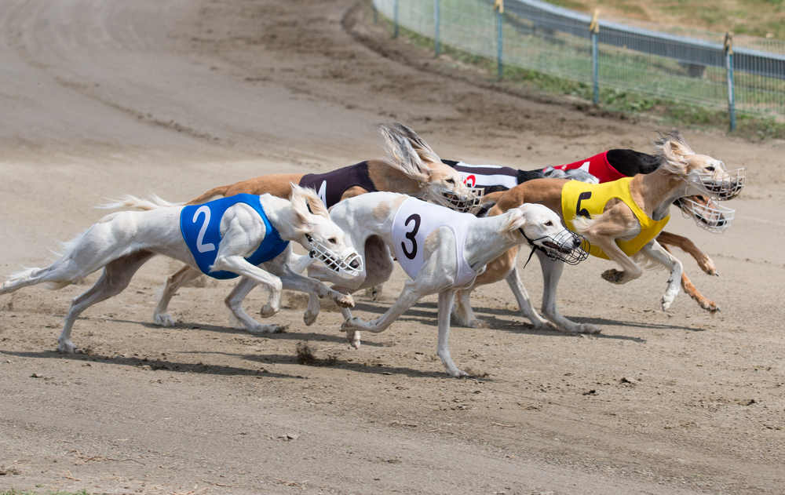
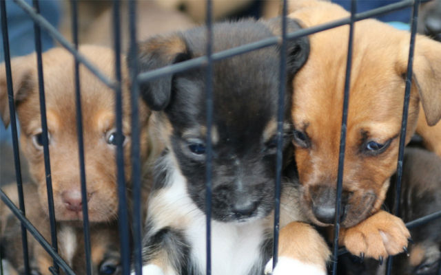
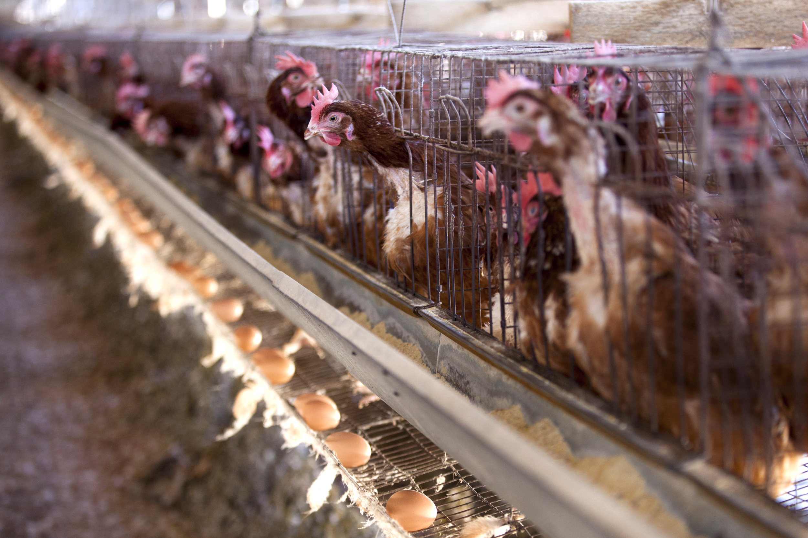
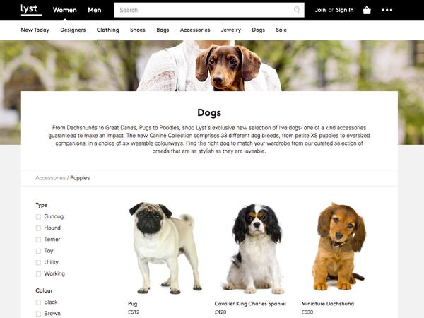
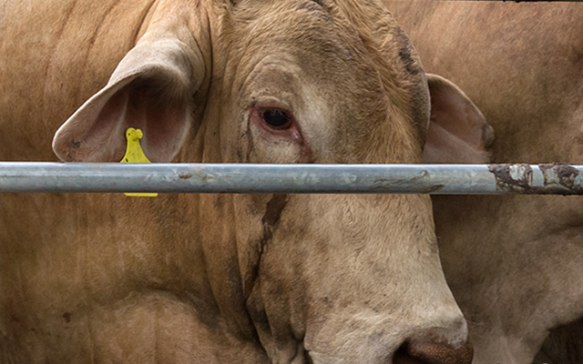

Current Issues
Throughout Australia the RSPCA works to Aid in Animal Welfare, here are some of the Current issues in which we are trying to combat.
-

Animal Testing
An estimated 27,000 live rabbits, mice, rats are still being used for cosmetics testing across the world. Each animal experiences pain and distress.
-
Horse Racing Welfare
Horses are routinely subjected to the use of painful devices in both training and racing with little understanding of their impact on horses and whether they’re actually effective. Of most concern is the routine use of whips in training and racing.
-

Greyhound Racing
Animal welfare issues remain of concern in greyhound racing, from the overbreeding of dogs, to problematic training methods, injuries and deaths in racing and training, continued instances of illegal live-baiting, and the fate of unwanted greyhounds.
-

Duck Hunting
Some of these ducks are killed outright. Some will be wounded, brought down and killed on retrieval. Many others will be crippled or wounded but not found, and will slowly die over the following hours or days, suffering prolonged pain and distress.
-

Puppy Farms
Dogs are often kept in overcrowded and filthy environments. Breeding animals may be confined permanently in small cages, never being allowed out for a walk, to play or express normal behaviours. These dogs can suffer from a range of health problems and behavioural problems as a result of not being socialised and being housed in conditions that fail to meet their needs.
-

Meat Chickens
Typically, chickens are kept in dim light for 23 hours a day to discourage movement and increase food intake to promote weight gain. This can lead to eyesight issues and poor leg strength. Poor quality and damp litter can also cause hock, breast and foot burns.
-

Online Advertising of Pets
We all love looking at photos of cute puppies and kittens online, but when those animals are being bought and sold through websites and social media, who is checking they’re safe and healthy?.
-

Live Cattle Export
Australian cattle live exported for slaughter are subject to stressful transport conditions, high stocking densities, and often suffer cruel slaughter and handling practices on arrival at their destination.